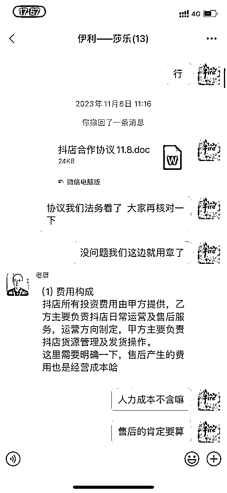

来源：https://xxuqrz1ty8k.feishu.cn/docx/KrLadIziBov9igxB4ErcwNUNnvg
大家好，我是一焱，重庆人在成都，刀姐记名弟子，去年四月起盘做抖店，现单月GMV超2000W
伊利锦歌专卖店单店单天破200W 类目排名第一，超东方甄选等旗舰店
抖音拼多多化，低价秒杀活动单店日破万单 商品卡（自然成交）单店单天销售破19万
助播快手top前3主播可乐，当天销售破5千万（少部分圈友应该知道绿色那个靓仔是我）
不要再去考虑抖音知识付费，抖音现在严打知识付费，跟着抖音风口去走。
现在抖音在推商品卡，口号是全网低价，扶持中小主播（这个有些扯淡，主播没得“苦大仇深”的精神是做不起来的）
这帮人都是字节跳动的，有字节的圈友应该认识，当时测试扶持中小主播，我们在承接该项目，后面不了了之，交付太重，最主要的是除了小主播收益，我们承接方（付出场地、货盘、培训等支持）基本是看不见啥收益。
2023年大盘，90%以上的主播都是亏损，主要亏在人力和投流，其实换一个角度想。当你直播带货+店铺或短视频带货+店铺同时进场，形成多维竞争力，你就会发觉组合竞争居然产生了蓝海。
做直播的作用就只有一个，就是打爆该品，都不一定是爆，只要有一定单量，就可以报抖音活动了。然后进行达人分发即可，就可以获得不错的收益。
要是all in在直播上，真的是破釜沉舟，当然有很多圈友拿到结果，不过我是不太赞成这种思维的，靠直播赚钱是大概率赚不到钱的，而且是大概率亏损。这里也提醒部分圈友，面对直播的知识付费慎入！慎入！慎入！好多做直播的都搞起来了知识付费了！
我们主播我想静静单场最高破了100万，其实这个账号去年算下来，基本不挣什么钱的，但是我们店铺端，收商家合作年框费用利润是很高的。
一句话总结，以店铺为核心，打爆链接是主要目的，根据平台规则做商品卡流量，承接中腰部达人，仍然是蓝海（现在做直播一定不是在直播端挣钱，可以收年框费用，可以直播打品做店铺，可以直播收徒等，单靠收佣金是走不起来的）
链接爆了以后，可以直接1-2%佣金，大主播是用来爆链接的，小主播直接低佣
可以直接跟达人说不挣钱，只要链接爆了，1%也是有人带的，其实我们有品牌方完成任务返点，大概还有8个点左右的利润
之前对选品理解太浅，说实话，我现在对选品的理解，一定是有优势的供应链。其它的不重要!
我对供应链的理解：产品成本+快递费+包材+工人费用+发货速度+单日发货上限
上月合作了一个纸品，真的是感受到被坑了，深度合作主播当天出了三千多单，居然发不出货。主播的号、店铺都死了，主播打电话回来骂，我们也是损失了投流费用及和主播的关系。这里大家一定要避坑。
产品成本其实大家差不多的，快递费这个其实是有空间的。
我有个合作伙伴夜场商务公关能力很强（不晓得生财尺度，个人认为这个很重要，后面也想阐述一下），我们1KG以下快递费，1元每单（很多快递公司都要刷单，国家有要求GDP要上升），10KG快递费6.5元左右。
其次就是对打包工人及包材的谈判，有时候做9.9元的品，我们真是按照分分钱来卡，跟同行竞争就是拼的分毛。
各方面成本一定要拉到极致
现在抖音多商品分考核越来越低了（占比25%-30%，各个品类都在下调），主要是服务和物流，你卖的东西质量不是太差就不用怕，一般策略是优质+劣质产品组合，不断测试两端占比，所以各项成本的节省空间很大。但是发货一定要快，服务一定要好（之前写了一篇帖子，怎么处理差评，可以借鉴一下）
我的目的目前来说还是为了挣钱，在产品品质上要求没有那么高。根据抖音对店铺各项考核及复购率去确定产品的标准，注重的仍然是挣钱效率，个人还是认为，产品的品质是你的量堆起来的。电商大多品是不具备长期价值的，把钱先搞到手才是王道。
深度合作的一个达人，顶上十个同级别的达人，和达人建立深度合作的背后是利益的交换。
这里有个细节，80%达人商务可以决定上品，建联可以搞定达人商务即可，不管是达人还是达人的商务，一定要满足他们的利益需求。
（初始怎么建联达人有两篇精华帖写的不错，大家可以借鉴一下）
1、捆绑推荐品
对接达人也是供给和需求，我们做到一定量以后，有些达人已经深度捆绑了，甚至说是很需要我们的产品，这个时候我们往往会推一些白牌的产品给到这些达人，进行前期的冷启动。
一来加深了更多的合作关系，我对关系的理解就是不断的合作拿到结果，二来白牌冷启动的成本也大大降低。
2、合作商务利益最大化
我坐标在成都，这边成都比较不错的达人，像C魅、刘巧巧、可乐、彩虹夫妇、大大小小的窝等，我们都是有深度合作
说白了我们会定期拜访他们，给他们商务返点，送钱公关，一起去商K等，除了利益关系，还有一些情感纽带，当然今年目标是搞定一些杭州的肩部及以上的主播
3、合作达人利益最大化
这里跟商务有一定区别了，这种能够合作的达人本尊，实话，很多达人都是老板自己本人亲自操刀干起来的，请的职业经理人大概率是做不成了。直播不确定的要素实在太多，所耗费的精力和财力太大，而且拿到结果的不确定性也强。
这边除了给这些达人老板建立关系以外，返点这些都不奏效了，因为所有收益都是他自己的。我们的合作方式是给到店铺给他们，给他们分成5-6成，帮助他们运营店铺（谈判成立逻辑，他们也知道直播的不稳定性，但是店铺相对稳定）
也会帮助他们亏品，抖音亏品比投流更划算，流量越来越贵，亏品成交密度增加，更容易打开流量池子。这样就容易和主播老板建立深度合作了。

4、超级主播建联
对于大主播怎么建立联系，我们完全是跟大主播助播余澜进行对接，每次合作给她一定收入（可以给她多分，自己前期不挣钱都可以，经常一起吃饭等，建立比较好的关系），她对接的价格一般都比市场低，甚至可以免费上品，很多大主播都是她介绍，而且黏性不错。
一句话总结：直接给介绍人相应的利益，让她搞到钱。这边有少部分找我对接头部主播，其实简单直接付费，对大主播商务投资，其实是值得的，大主播99%不保比的。（这里有个误区，很多人觉得付坑位费或者什么，一定要达到多少GMV，这样大主播商务根本不会理你，只要搞好关系，后面挂大主播橱窗都是免费的）
和人人乐合作的店铺直接免费挂彩虹橱窗了，不管分数还是单量都达不到他们的标准
顺便说一句，对接大主播还得看品，甚至连伊利奶酪这种大品牌，即使给了坑位费也不一定上，所以在对接大主播推品一定要调研好数据，要了解该主播的具体诉求。
伊利奶酪彩虹夫妇坑位费退款
目前测试，以下是报名指南，这个流量是真的香，刚报的新店一天都有上千单
这里可以和小二搞好关系，可以直接安排流量加权（字节的人还是很正气，积极参加他们的活动，多回应他们，多请教他们关系就好了）
后面单店能爆万单，全靠小二流量加权，这边链接爆了，达人放3个点以内都很多人带，这边不管人工、包材、仓储的所有成本都拉下来了。
可能大家会好奇我们团队多少人，我们团队核心人员只有四人，很多事我都会亲力亲为，其余人员都是现结合作，包括明星助播、分发团队等，都是进行项目制。圈内一位大佬说过，这个时代，我们人均上限是人效一年挣300万，我们目前还并未达到。
抖音卷肯定是很卷的，要进场，一定要形成自己的多维竞争力，我是店铺运营+达人资源组合，最后在抖音蓝海商品卡挣钱（商品卡成交是免去平台扣点费用的）
我们的目的是把一个白牌打造成一个半品牌，做成品牌是一辈子的战略目标。商业模式是：抖音打爆该品，全域电商截流，我们更擅长的是传统电商。
个人认为目前只有抖音可以造就一个品牌，是值得全身心投入进去的。
目前还是属于创业初期阶段，这里引用谷歌创始人拉里佩奇在创业初期的一句话：一个人是否能够在创业上取得成功，首先，是否能够将自己压榨到极致，而且任何岗位出了空缺自己都能顶上。其次，是否有能力养活一个团队。
与君共勉！
在这里再次感谢生财这个平台，感谢亦仁老大，很多精华帖子让我受益匪浅，感受到了众多实干家的魅力，之前做也并不是一帆风顺，深夜看看亦仁老大的收藏夹，让自己充满了力量。当然最重要的是让我挣到了钱，再次感谢！